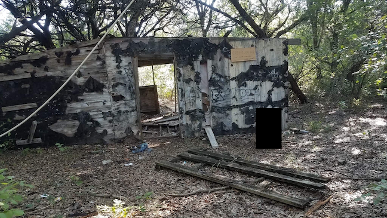

How does progression relate to destruction (or creation or modification)? Is progression a (non-)zero-sum game? This essay doesn't follow a central path, instead touching on a variety of thoughts.
Progress is often correctly used synonymously with the word "better" (note the quotation marks): computer chips being smaller and faster is progress; vehicles with higher fuel-efficiency is progress; cutting down hundreds of trees and displacing hundreds of animals to create a concrete path for people to get out into nature is progre... hol' up. What?!
The problem lies in the subjectivity of what's "better" is exactly what happened in Part I. While it was never officially stated, the masterminds behind the grand vision of having a trail that looped the city undoubtedly viewed it as progress, for it was adding to the city's allure and improving the lives of all those who used it (yet worsening the lives of those who had already been using what was previously there, but is no longer). How is this progress? How does destroying nature to get people into nature make any sense?
Progress can be both a zero- and non-zero-sum game. Part I is a perfect example of a zero-sum—or arguably negative non-zero-sum—game. The demolishing of the path may have encouraged a handful of people to get out and exercise, but it can be argued that the majority of users would eventually fall of the exercise wagon: if they weren't exercising before, how is a path going to help? This is the same logic as someone who gets a piece of exercise equipment in hopes that the money they spent will motivate them to exercise. And yet, months later the equipment is still sitting in the same place it was put after coming home from the store, gathering dust and cobwebs. The negative addend comes from the previous trail users being barred from over half their trails, forced to ride a select few while watching their old favorites through a fence wither away over the course of the seasons.
On the positive side of zero, the creating of mountain bike features is an example of progressing at the expense of nothing. No one is missing the wood, no one has to ride the stunt. The only ones who are negatively affected are those who participate (unsuccessfully) of their own accord.
So why couldn't this be the same? Why couldn't this trail be a positive non-zero-sum game? A few answers immediately come to mind, which apply not only to building public trails, but anything destructive related to "progress".
First, appealing to the lowest common denominator is the main focus of the board who makes these decisions. There is no if-you-can't-do-it-not-my-fault option (it = navigate the non-paved trails or, more generally, difficult things not everyone is able to do), else they look bad, lose their position, and get replaced by someone else who will listen to their constituent's complaints. But who says there can't be an IYCDINMF option? Voters elect these board members into office in hopes that they will reflect their interests. Shouldn't the people who have a direct stake in the outcome—those who use the woods regularly and have homes nearby—have their votes count for more? The answer is a resounding yes. Akin to a representative living outside of their responsible district, it is wrong for those who will never use this path to have a significant say in its fruition and all the costs and destruction that come along with it. Yes, it's technically their city and by extension park, but it's also easy to dictate how others should feel and behave when not directly affected by the situation.
Second, the feeling of the need to do something. Having been elected, those who hold said office feel the need to contribute in some form, to make their mark and prove that they're not just twiddling their thumbs waiting for something to do, but rather actively working to improve the community and its amenities. Working on the trivial is better than working on nothing, and in the political sphere, if you ain't producin', you ain't comin' back. And the more positive and wholesome the something—like expanding the efforts to help combat the city's obesity problem—the more blindly lauded the something is. Who would ever oppose something like that?
Third, the officials genuinely believe that's what best for the city and its people. They have their opinion (once again, most likely without skin in this game) and I have mine (with bona fide skin in this one). I can only blame them for not considering my attachment to the land nor their detachment—their pushing for and enacting what they think is best is laudable as a practice and philosophy, except when it affects me!
There are parallels between modern American culture and what's happened here. The "need" for "progress" is everywhere, and while it's a noble pursuit, the true purpose is often forgotten: progress is to make things better, not simply different. A good case study is Apple's removal of headphones jacks from the iPhone. The progress here is minimal (except for Apple itself, who positioned themselves to make bank off of the wireless game) and the disruption significant: iPhone owners were forced to convert to wireless headphones or get an adapter for their now-obsolete headphones, in addition to not being able to simultaneously charge the phone and listen to audio. The original jack-lightning port setup was about as good as it needed to be, but heaven forbid Apple doesn't release some crazy new idea at their annual meeting.
But the need for progress continues and will likely never stop.
The solution? Change the mindset of what progress is and isn't. Progress can be made without destruction and subsequent construction. Additive improvements can be made with minimal to no subtractive actions. Do not cave to the lowest common denominator nor the loud minority. Stand up for personal principles and not the ones set by the job nor the people being served. Examine who's being affected by sweeping changes and hear out the voices of both sides. Propose a discussion between the two. Understand that idleness is not always a negative thing, and sometimes inaction is better than action.